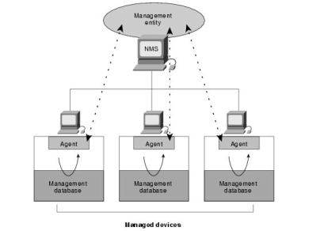
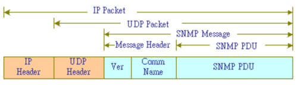
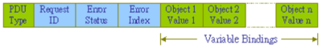
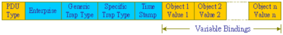
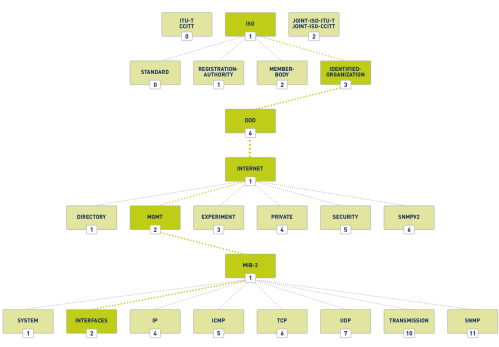

SNMP
The explanation of SNMP is done also
HERESNMP
is used for exchanging management information between network devices(e.g.:used to configure a router or simply
check its status)
SNMP network has three key components:
•
network-management system
(NMS) → also called manager is usually the System Administrator that send/receive commands to/from the
agents
•
managed device → is a network node that can be a router, switch, hub, computer,
printer... that contains an agent
•
agent → software that runs on managed devices

Ports
UDP 161 → for general messages
UDP 162 → for Trap messages
SNMP versions
• SNMPv1: is the most vulnerable (clear text protocol)
• SNMPv2: can be compromised because of
its inherent weaknesses.
• SNMPv3: although it uses encryption, it is still susceptible to attacks like brute
forcing
SNMP operations
Get → The NMS sends a
get request to the
agent. The agent responds with a
get-response to the
NMS
GetNext → used by the NMS to determine what variables a certain agent supports
Set → used to configure
devices and change device settings
Trap → used to "trap" events from the device and report them back
to the manager. A trap message is used to alert the manager to the fact that a "trap" event is occured,
this can meaning that the threshold defined by the manager (with the set command) has been reached, or that an
error/event of some type has occurred
SNMP commands to control and manages devices
• Read → to monitor devices
• Write → to configure devices and change device settings
•
Trap → trap" events from the device and report them back to the monitoring system.
• Traversal Operations
→ used to determine what variables a certain device supports.
SNMP message
A SNMP Message is composed by:
•
Message Header:
◇
Version
Number ◇
Community Name (or string), which is used as
a form of “secure” password authentication in SNMP. There are two types of Community Names:
▪
Private Community
Name allow "write" access
▪
Public Community
Name allow "read" access
•
SNMP PDU
(protocol data units): depends on the type of message that is being sent
◇ Get ,Get-response, GetNext Set
 ◇ Trap

MIB (Management Information Base)
MIB (Management Information Base) is a database of informations which define the properties of the
managed device (such as a router, switch, etc.).
This database is structured as a tree and each element of this
tree is an OID (Object Identifier), an address used to uniquely identify managed devices and their properties that
can be read/written by the NMS(manager)
bibliography:
https://docstore.mik.ua/orelly/networking_2ndEd/snmp/ch02_06.htmhttp://www.tsnien.idv.tw/Internet_WebBook/chap16/16-3%20SNMP%20%E5%8D%94%E5%AE%9A.html
Attacks that can be done against SNMP
•
Flooding: DOS attack which involves spoofing an SNMP agent and flooding the SNMP
trap management with tens of thousands of SNMP traps, varying in size from 50 bytes to 32 kilobytes, until the SNMP
management trap is unable to function properly.
•
Community: Using Default Community
Name(string) to gain privileged access to systems.
By default SNMPv1 and SNMPv2 have the Community Name set
to “public”.
•
Brute force: Using a tool to guess the Community Name(string) used on a system
to achieve elevated privileges
to discover which is the Community Name we can use tool like Nmap withe the
snmp-win32-services
NSE script
Enumeration SNMP step
1.
Obtain Community Names(strings) The first thing to do is obtain the
Community Name(string), from it will depend then the type and amount of information gained. We can do it by
◇
Sniff the network traffic: SNMPv1 and SNMPv2 utilize clear text
communications, so it is easy to sniff the passwords coming from the network management systems
◇
Dictionary attack: anyway beware that most current
Network IDSs (Intrusion Detection Systems) will alert to this activity as it sees the multiple login attempts with
different Community Names.
2.
Extract information from the remote device read access can be also enough because we can use the informations for
later
{kind=link}
{kind=link}
{kind=link}